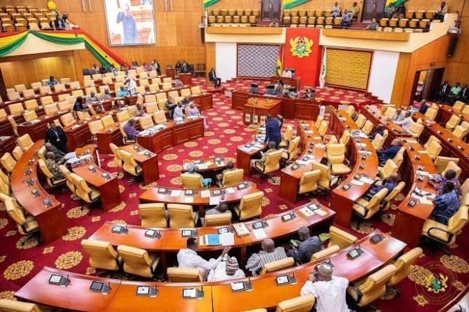

Imagine waking up one morning and discovering there are no laws, no police, no courts, no elections, and no leaders. How would society function? Who would make decisions? Who would protect people's rights? Government helps us understand how societies organize themselves, create laws, maintain order, and promote development.
Government is the study of political institutions, leadership, constitutions, laws, public administration, and the processes through which countries are governed. It helps students understand how power is acquired, exercised, and controlled in society.
As an SHS student, you will study topics such as:
Government can lead to careers such as:
Many students think Government is only for people who want to become politicians. That is not true. Government develops critical thinking, leadership, communication, public speaking, and decision-making skills. Many successful lawyers, diplomats, policy experts, journalists, and business leaders studied Government at some point in their academic journey.
This is only a small introduction. If you want to understand how programmes connect to university courses, careers, opportunities, and future success, get a copy of:
The guide designed to help students make informed decisions about their future and discover opportunities they may never have considered.